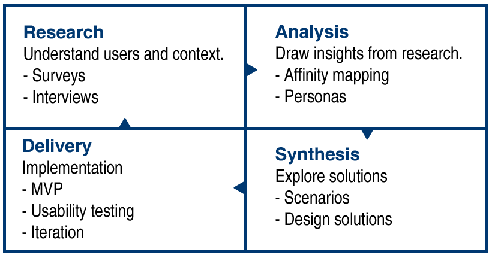
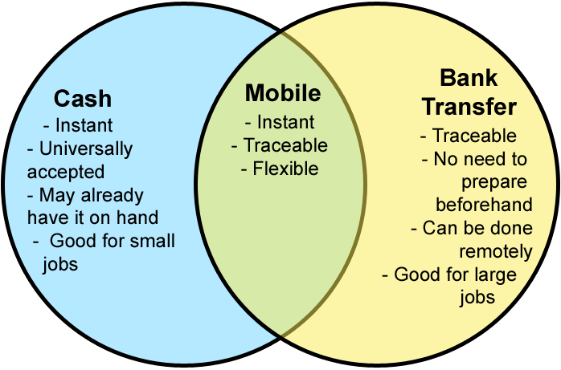

Research Case Study
The business's core product was a two-sided marketplace to connect consumers who need a job done with local service providers (e.g. carpenters, photographers, removalists, etc.) who are available to do the work.
Business Problem
As a result of the organisation pivoting to a different revenue model, there was a business need to collect transaction data (which often occurred offline).Research Objective
Establish the existing mental model regarding payments for jobs. Ascertain why certain payment methods are preferred and if there are any opportunities to improve the experience in an online setting.Constraints
In-person contextual inquiries were not feasible but I compensated for this by doing them remotely (screensharing on Skype during) some of my interviews, so that even if I couldn't observe the physical context/environment, I could at least observe their digital behaviour/environment with real data.Methodology
-
Research: Understand users and context.
- Surveys
- Interviews
-
Analysis: Draw insights from research.
- Affinity mapping
- Personas
-
Synthesis: Explore solutions
- Scenarios
- Design studios/ideation workshops
-
Delivery: Implementation
- MVP
- Usability Testing
- Iteration
Research
We knew the business impetus for the project, but was actually there a problem to be solved from the users' perspective?Research Objective
Find out how payments currently work and why people prefer various methods. (i.e. establish the status quo and identify any opportunities for improvement)Conducting the Research
I set up a survey asking users about how they paid for a specific job and why, as well as their general preferences with payments. This way, I elicited both preferential data and the actual outcome.Survey QuestionsSome considerations I made while writing the questions include the following:
CustomersBusinesses
- What was the last job you hired someone for?
- How did you pay for this job?
- Why did you choose that method over the others?
- If different to the above, what is your most preferred method and why?
- Which industry do you work in?
- Which payment methods do you accept?
- Which is your most preferred and why?
- Which do you NOT accept? Why not? (Optional)
- Asking for the industry/job type allowed me to look at the differences/similarities between payments in different industries
- Asking specifically about the customer's last job helped to get more accurate information than if I were to ask them to generalise
- I asked for both actual and preferred payment methods to track the difference
Analysis
I affinity mapped the research findings, grouping them by payment method and then by reasons/themes. I was able to identify patterns in cases where each payment method was the most preferable and why. I also paid attention to when the preferential data was different to their actual behaviour, as that suggested an unfulfilled need. We were able to uncover some insights about the payments process and validate the existence of a problem to be solved regarding credit cards.Customers wanted to do what was easiest for the business
Although customers had preferences for payment, the actual payment method used was generally influenced by what was easiest or asked for by the business, especially if there was rapport.Cash and Bank Transfer were easiest
The words "easy" and "quick" featured prominently in the research results, and cash and bank transfer were considered the most convenient.There are a number of circumstances that influence which method is preferable including
- If the price is known/predictable before the job starts
- The size/value of the job
- Whether the payment is made face to face
Cash was preferable for smaller jobs and/or where the cost was known
The big drawcard for cash is that it's instant and universal. Customers knew that cash would always be accepted (and sometimes they even got discounts). For businesses, it saved them a lot of hassle. And for both customers and businesses, paying cash meant that it was over and done with. However, a big dependency in this advantage is having the cash on hand. The larger the job, the less likely the customer would be to have enough cash on hand. Likewise, for jobs where the cost is not known in advance. Having to withdraw cash, particularly large amounts, was a disadvantage (and withdrawing may not even be feasible for jobs where everything takes place on the same day). In these cases, bank transfer was preferable.Bank Transfer was preferable for large and/or less predictable amounts
Bank transfer was advantageous in that it didn't require the customer to have the cash on hand (which is useful when the amount is large and/or not known upfront). It also had the advantage of being traceable, which provided the customer with a sense of security. With cash jobs, there was not always an invoice or receipt, but traceability was not as big an issue for smaller value jobs. For businesses, it allowed them to go home after they've been working all day and take care of the invoicing and admin tasks later (as payment by bank transfer doesn't need to be done face to face). Additionally, for some businesses, their accounting systems were set up to automatically match bank receipts with accounting revenue.However, since the payment is not settled then and there, there is a risk of dragging the process out as customers do not always pay promptly (and in some cases, they don't pay at all).
Accepting credit cards wasn't worth it
While the majority of payments were by bank or cash transfer, very few businesses offered credit card as a payment option. This was because of the cost and equipment associated, which business's could not justify given the size of their business and the ease of alternatives. Credit card did feature prominently in the preferential data from customers, however (particularly for larger jobs).Businesses were anxious about getting paid
By far, the pervading theme of business's frustrations with the payment process was anxiety about getting paid, including not getting paid on time (or at all), customer resistance to payment, and the feeling of uncertainty that came along with all of it. Moreover, chasing customers up for payment was time consuming.Opportunity: The best of both worlds
There was an opportunity to save business's time and ease their anxiety by combining the certainty that came with settling the payment immediately, and the traceability and flexibility of bank transfers. It also reduces admin by utilising the information we already have about the initial quote, the business's bank details, the customer's contact information, etc. Furthermore, if the barrier to accepting card payments was cost and equipment, that was something we could address using mobile and absorbing the credit card fees (this was possible as the businesses paid a commission that was greater than the cost of the credit card fee). Synthesis
Personas
We saw some patterns emerge in the data, which we captured by creating personas. In summary, our main personas were:- Mick: 35 year old electrician, high domain knowledge, relatively low tech savviness, prefers cash but also accepts bank transfer.
- Alana: 25 year old architect, larger scale jobs, tech savvy, not always present, prefers bank transfer.
- Julie: 30 year old customer, low domain knowledge, time poor. Prefers whichever is easier in the situation (prefers cash if she has it on hand/doesn't need to withdraw).
Scenarios
I gathered everyone who would be working on the payments project and we storyboarded the different scenarios (price known/unknown, settled immediately/later, etc.) based on the research and the personas we had identified. We looked at when the pain points happened, and the surrounding context. Then we iterated on the storyboard with the proposed solution. In our scenarios we were particularly interested in:- Mick doing a small/large job
- Price is known/unknown at the start
- Invoicing on site/after the job
- Julie paying promptly/needing to be prompted
The main problem points we identified were:
- Julie doesn't have the cash on her
- Julie has so much to do, she forgets about/procrastinates paying Mick (bank transfer)
- Mick is anxious about getting paid, and has to spend time chasing customers up
- Escrow - jobs requiring deposits and/or instalments (I went back and did more research on this one)
- Invoice - jobs where Julie requires traceability or a breakdown of the price
- Customer initiated transactions - where Julie is more tech savvy than Mick, Mick can initiate verbally as normal and Julie can respond by initiating the online portion of the transaction
Ideation workshop
We knew broadly what were going to do, and we had described it in prose. We had an invoicing system on the site that we could adapt for some of this project (this made it a lot easier for the developers, and we could make changes based on feedback). However, for the more substantive parts that we were starting from scratch, we began the design process with an ideation workshop. It has been proven that groups outperform individuals when performing creative tasks, and the design studio technique allowed us to harness this effect in eliciting creative ideas from a cross functional team.One example is the workshop we conducted for escrow. In preparation, we looked at competitor's offerings (e.g. Airtasker, Freelancer, Odesk) to see how they implemented theirs. Together, we analysed the merits of each, and identified the differences in context (e.g. Freelancer's solution was good for Alana, but not so great for Mick). A variety of ideas came out of the workshop including:
- A contract metaphor: accepting the quote for works done and establishing the escrow with release contingent upon said works being completed
- Automatically establishing escrow for some job types
- Replicating the existing payment flow (instead of requesting just payment, adding an extra step of requesting escrow deposit)
- Use of mobile to conduct the transaction (particularly releasing funds), including authorising the payment by replying to an SMS
- There were also ideas about the language to be used, where the feature should sit in the site and various interface elements
Sketching
Sometimes a design studio was considered overkill if the problem was fairly straightforward, such as allowing Julie to access her transaction history and receipts. In cases such as this, I would look at the research we had done and sketch the required flow for the user goal, either on my own or with my payments colleagues. At this stage, the aim was to come up with the framework, rather than the specific interface details. I would come up with a couple of alternatives and discuss it with the team. Once we had a shared vision, we began prototyping.Delivery
Prototyping
Before we began building anything, I first built a prototype to validate it and identify any issues. The method for prototyping depended on the maturity and/or scale of the concept. For some of the larger and/or more novel portions, such as the mobile solution, I used paper prototyping. For smaller, higher confidence interfaces, or where it would otherwise be easier to start directly from an Axure prototype, that is what I did. For instance, for the original flow (business requests payment, customer pays), we had decided to leverage our existing invoicing system. As such, I was able to reuse my Axure prototypes, and I made the relevant changes.Once the prototype is built, it's then a matter of usability testing and iteration. For instance, to speed up invoicing, I originally had the due date prefilled and uneditable (the business would set their terms in their settings and this would be applied across all invoices). However, in testing, it was revealed that the terms could be different depending on the type of customer (a business customer vs. a residential customer). This meant that we needed to allow businesses to set the due date of each invoice, which we fixed for the next iteration.
Release of MVP
After iterating, we got the developers to code up the minimal viable product, so that we could learn from people actually using it.Evaluation and iteration
Once the MVP was released I monitored how it performed. For example,- After the interface for customers to pay businesses was released, I had a poll/widget appear on the page to collect feedback. This showed that people were not receptive to the credit card fee, for example.
- Further usability testing showed that improvements we had made (e.g. creating a standalone page for payment instead of including it in an existing page) had reduced the cognitive load on users.
- I also used Clickstream analysis as an indirect method to observe people using it. This showed that some people were having difficulty with the SMS code and abandoning after multiple attempts.
- I also used analytics to quantitatively assess the success of some initiatives. For instance, there was a sprint-long experiment with collecting credit card information as an optional part of posting a job on the site. Based on the low microconversion rate (of credit cards collected) and the high bounce/exit rate, it was recommended that this be removed.
We knew the business impetus for the project, but was actually there a problem to be solved from the users' perspective?
I also added a modified version of the questions to one of the customer support call scripts and used the call centre to increase the sample size. I also conducted my own phone and/or Skype interviews to delve deeper qualitatively.
Research Objective
Find out how payments currently work and why people prefer various methods. (i.e. establish the status quo and identify any opportunities for improvement)Conducting the Research
I set up a survey asking users about how they paid for a specific job and why, as well as their general preferences with payments. This way, I elicited both preferential data and the actual outcome.I also added a modified version of the questions to one of the customer support call scripts and used the call centre to increase the sample size. I also conducted my own phone and/or Skype interviews to delve deeper qualitatively.
I affinity mapped the research findings and identified patterns in the pros and cons of each method, as well as where preferences and actual behaviour diverged.
Cash
Advantages
- Instant – it‘s over and done with
- Universal
- Discount for the customer (sometimes)
- Saved a lot of hassle for both parties(assuming customer has the cash on hand)
Disadvantages
- Withdrawing is inconvenient and may not be feasible in some cases
Good for
- Smaller jobs/lower value jobs
- Cost is known in advance
Bank Transfer
Advantages
- Don‘t need to have the cash
- Leaves a paper trail (customer feels secure)
- Can be done remotely
- Some service providers automatically match bank receipts with accounting revenue
Disadvantages
- Can drag on, resulting in delays or non-payment
Good for
- Larger jobs/higher value jobs
- Cost is unpredictable (e.g. hourly rate)
- Remote workers
Customers wanted to do what was easiest for the business
Although customers had preferences for payment, the actual payment method used was generally influenced by what was easiest or asked for by the business, especially if there was rapportAccepting credit cards wasn't worth it
While credit card did feature prominently in the preferential data from customers (particularly for larger jobs), few businesses offered it as an option because of the cost associated, which business's could not justify given the size of their business and the ease of alternatives.Businesses were anxious about getting paid
By far, the pervading theme of business's frustrations with the payment process was anxiety about getting paid, including not getting paid on time (or at all), customer resistance to payment, and the feeling of uncertainty that came along with all of it. Moreover, chasing customers up for payment was time consuming.Personas
Our main personas in which we encapsulated the patterns from the research are as follows:Mick
- 35 year old electrician
- High domain knowledge
- Relatively low tech savviness
- Prefers cash but also accepts bank transfer.
Alana
- 25 year old architect
- Larger scale jobs
- Tech savvy
- Not always present
- Prefers bank transfer.
Julie
- 30 year old customer
- low domain knowledge
- time poor
- Prefers whichever is easier in the situation (prefers cash if she has it on hand/doesn't need to withdraw)
Opportunity: The best of both worlds
There was an opportunity to save business's time and ease their anxiety by combining the certainty that came with settling the payment immediately, and the traceability and flexibility of bank transfers. It also reduces admin by utilising the information we already have about the initial quote, the business's bank details, the customer's contact information, etc. Furthermore, if the barrier to accepting card payments was cost, that was something we could address using mobile and absorbing the credit card fees (this was possible as the businesses paid a commission that was greater than the cost of the credit card fee).Scenarios
I gathered everyone who would be working on the payments project and we storyboarded the different scenarios (price known/unknown, settled immediately/later, etc.) based on the research and the personas we had identified. We looked at when the pain points happened, and the surrounding context. Then we iterated on the storyboard with the proposed solution. In our scenarios we were particularly interested in:- Mick doing a small/large job
- Price is known/unknown at the start
- Invoicing on site/after the job
- Julie paying promptly/needing to be prompted
The main problem points we identified were:
- Julie doesn't have the cash on her
- Julie has so much to do, she forgets about/procrastinates paying Mick (bank transfer)
- Mick is anxious about getting paid, and has to spend time chasing customers up
- Escrow - jobs requiring deposits and/or instalments (I went back and did more research on this one)
- Invoice - jobs where Julie requires traceability or a breakdown of the price
- Customer initiated transactions - where Julie is more tech savvy than Mick, Mick can initiate verbally as normal and Julie can respond by initiating the online portion of the transaction
Ideation Workshop
We had an invoicing system on the site that we could adapt for some of this project (this made it a lot easier for the developers, and we could make changes based on feedback) but for the more substantive parts that we were starting from scratch, we began the design process with an ideation workshop. It has been proven that groups outperform individuals when performing creative tasks, and the design studio technique allowed us to harness this effect in eliciting creative ideas from a cross functional team.One example is the workshop we conducted for escrow. We conducted the workshop with everyone in the office and variety of ideas came out of it including:
- A contract metaphor: accepting the quote for works done and establishing the escrow with release contingent upon said works being completed
- Automatically establishing escrow for some job types
- Replicating the existing payment flow (instead of requesting just payment, adding an extra step of requesting escrow deposit)
- Use of mobile to conduct the transaction (particularly releasing funds), including authorising the payment by replying to an SMS
- There were also ideas about the language to be used, where the feature should sit in the site and various interface elements
Competitor Research
Competitor research was another useful tool in exploring solutions. In preparation for the escrow design studio, for instance, the core team looked at competitor's offerings (e.g. Airtasker, Freelancer, Odesk) to see how they implemented theirs. Together, we analysed the merits of each, and identified the differences in context (e.g. Freelancer's solution was good for Alana, but not so great for Mick).Sketching
Sometimes a design studio was considered overkill if the problem was fairly straightforward, such as allowing Julie to access her transaction history and receipts. In cases such as this, I would look at the research we had done and sketch the required flow for the user goal, either on my own or with my payments colleagues. At this stage, the aim was to come up with the framework, rather than the specific interface details. I would come up with a couple of alternatives and discuss it with the team. Once we had a shared vision, we began prototyping.Prototyping
Before we began building anything, I first built a prototype to validate it and identify any issues. The method for prototyping depended on the maturity and/or scale of the concept. For some of the larger and/or more novel portions, such as the mobile solution, I used paper prototyping. For smaller, higher confidence interfaces, or where it would otherwise be easier to start directly from an Axure prototype, that is what I did. For instance, for the original flow (business requests payment, customer pays), we had decided to leverage our existing invoicing system. As such, I was able to reuse my Axure prototypes, and I made the relevant changes.Once the prototype is built, it's then a matter of usability testing and iteration. For instance, to speed up invoicing, I originally had the due date prefilled and uneditable (the business would set their terms in their settings and this would be applied across all invoices). However, in testing, it was revealed that the terms could be different depending on the type of customer (a business customer vs. a residential customer). This meant that we needed to allow businesses to set the due date of each invoice, which we fixed for the next iteration.
Release of MVP
After iterating, we got the developers to code up the minimal viable product, so that we could learn from people actually using it.Evaluation and iteration
Once the MVP was released I monitored how it performed. For example,- After the interface for customers to pay businesses was released, I had a poll/widget appear on the page to collect feedback. This showed that people were not receptive to the credit card fee, for example.
- Further usability testing showed that improvements we had made (e.g. creating a standalone page for payment instead of including it in an existing page) had reduced the cognitive load on users.
- I also used Clickstream analysis as an indirect method to observe people using it. This showed that some people were having difficulty with the SMS code and abandoning after multiple attempts.
- I also used analytics to quantitatively assess the success of some initiatives. For instance, there was a sprint-long experiment with collecting credit card information as an optional part of posting a job on the site. Based on the low microconversion rate (of credit cards collected) and the high bounce/exit rate, it was recommended that this be removed.

{kind=link}
{kind=link}